These are a bunch papers, sites, repos, etc that have caught my attention, which I want to do more with.
It's a very incomplete list, but I think every resource here is worth a read or more likely a skim. It's a lot of reading, but I think knowing a lot of papers and techniques at a surface level is super helpful. Helpful enough that I want to make my list and notes public. Then if the time comes when you do want to dig deeper, you can do so.
The ones I've written notes for already are highlighted in green on the side. If anything I say is incorrect or you have something to add, please yell at me on twitter or discord.
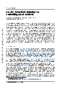
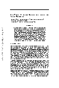
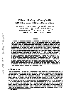
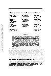
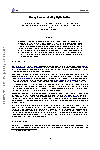
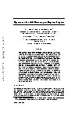
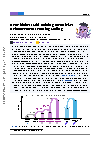
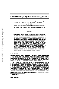
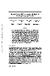
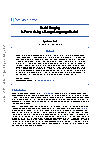
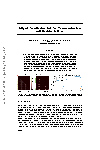
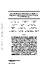
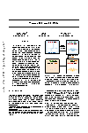
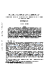
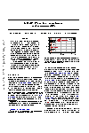
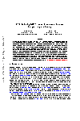
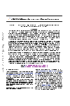
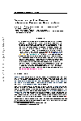
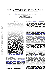
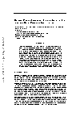
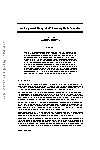
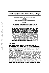
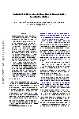
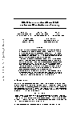
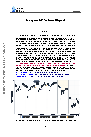